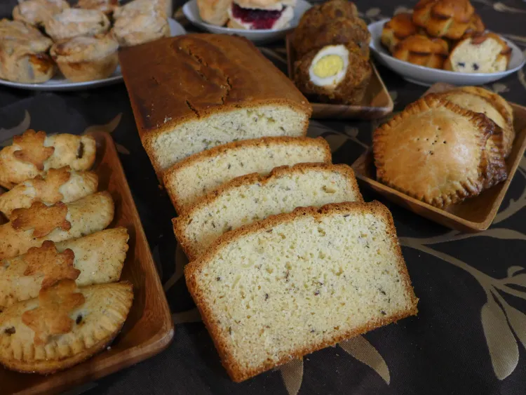

Back to Home

While second breakfast was all about hearty, durable foods you could tuck in a pack and use
as adventure fuel, Elevenses is full of more delicate breads, best served fresh and hot from the oven with a dab of butter and
fresh country jam. Think of it as a chance to relax with an assortment of light treats, maybe interspersed with
a nice wedge of cheese from time to time. Nothing too heavy – you don’t want to ruin your appetite for lunch,
after all.
In his writing, Professor Tolkien said he was particularly fond of Seed Cake. Try a slice of this
vintage recipe with a warm mug of tea and see if it doesn’t transport you to another realm.
¾ c / 180 g butter
1 c / 200 g sugar
2 c / 250 g flour
3 tsp baking powder
1 tsp salt
¼ c / 30 g almond meal/flour
1 ½ tbsp caraway seeds
¼ cup / 60 ml whole milk
2 1/2 c / 320 g powdered sugar
1/2 cup / 120 ml cold water
1 tsp almond extract
- Cream the eggs, butter, and sugar. Yes, that’s a lot of butter. The Victorians weren’t known for eating
healthy. In another bowl, whisk together the flour, baking powder and salt. Once they’re well blended, add
the almond meal and all important caraway seeds.
- Mix the dry ingredients into your bowl of butter. Splash in the milk. Now give it all a good beating so
everything is well blended. You should achieve something the thickness of brownie batter. Scoop your batter
into a well greased 2 pound cake pan. (You’ll need a spatula. This batter is way too dense to pour.) Shake
the pan to help settle the batter before baking.
- Bake at 350F / 180 C for 50-55 minutes, or until it is both golden brown on top and a toothpick inserted in
the center comes out clean. This loaf is so dense it can be deceptive, so make sure to give it that
toothpick test.
- Let the cake rest in the pan for 20 minutes before removing it. That both lets it cool and reduces the risk
of it crumbling when you remove it. If you buttered the pan heavily enough, after 20 minutes it should slide
right out.
- The Victorians weren’t fans of icing on their cakes. However, if you prefer a little extra sweetness on top,
feel free to add a light sugar glaze. Simply whisk the glaze ingredients together. If it’s too thin for your
taste, add another 1/4 cup powdered sugar. Let the cake cool completely then paint the glaze on top.
- Once the loaf has cooled, serve cut it into 1 inch / 2.5 cm slices. It should last 3-4 days in an airtight
container, provided you can keep your hands off it for that long.